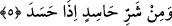

bulunduğu durumu ona açıkladı. Eğer hârikulâde mûcizeler, düşmanlarının iddiâ ettiği
gibi sihir babından olsaydı kendisine yapılan sihri anlamada problem yaşamaz, bunu
kendi kendine bertarâf edebilirdi. Allah’a hamd ü senâlar olsun, bu durum O’nun
nübüvvetinin en güçlü burhanlarındandır. Nebî (s.a.) hanımları arasından Âişe
(r.anhâ)’ya Allah Teâlâ’nın kendisine içinde bulunduğu durumun sihirden
kaynaklandığını açıkladığını bildirmişti. Çünkü Rasûlullah (s.a.) Âişe (r.anhâ)’ya bu
dönemde yaklaşamamıştı.
Yahyâ bin Ya‘mer’den gelen rivâyette şöyle geçmektedir: Rasûlullah (s.a.) Âişe
(r.anhâ)’dan engellenmişti. Uykudayken ya da uyku ile uyanıklık arasında iken yanında
iki melek beliriverdi. Biri başucuna diğeri de ayak ucuna oturmuştu. Ayak ucunda oturan
diğerine,
- “Şikâyeti nedir” diye sordu. O da,
- “Sihir” dedi.
- “Kim yaptı?” deyince
- “Yahûdî Lebid bin A‘sam” diye cevap verdi.
- “Nerede yaptı?” diye sordu.
- “Falanca kuyuda.” dedi.
- “Devâsı nedir?” deyince, şunları söyledi:
- “O kuyuya biri gönderilir, dibindeki kayaya ulaşıncaya dek suyu boşaltır. Onu
görünce söksün, altında bir bardak vardır ki o boynu kopmuş bir testidir. Bardağın
içinde bir ip ve ipin üzerinde iğne ile dikilmiş on bir düğüm vardır. Onları ateşle yakar
ve Allah’ın inâyetiyle iyileşir.” Bunun üzerine Efendimiz (s.a.) uyandı. Onların
dediklerini anlamıştı. Ali (r.a.)’ı gönderdi...[272] Kıssanın devamı yukarıda geçmişti.
Hz. Âişe (r.anhâ)’dan gelen bir rivâyet de şöyledir: “Rasûlullah (s.a.)in vücûdunda
bir rahatsızlık olunca sağ avucunun içine “İhlâs” ve Muavvizeteyn sûrelerini okur ve
ağrıyan yerine sürerdi” [273]
Bu âyette saf ve temiz kalplerin akîdelerinin düğümleri üzerine aklî kötülükler ve
vehmî şüpheler üfleyerek onlara âdetâ sihir yapan nefsânî evhâmlara ve şeytânî havâtıra
işâret vardır. el-Iyâzu billâh (Allah’a sığınırız).
5. Ve kıskandığı vakit kıskanç kişinin şerrinden!
Okuyan kimse burada vakıf yapar sonra da tekbir getirir. Çünkü vâsılda bazı farklı
anlamlara yol açılabilir.
Nefsindeki hasedi izhâr edip muktezâsınca şerrin mukaddimelerini tertîb ederek hased
ettiği kimseye kavlen ve fiilen zarar vermeye başladığında…
Keşşâf’ta şöyle geçer: Neden kendisinden sığınılan şeylerin bazıları nekre geldiği